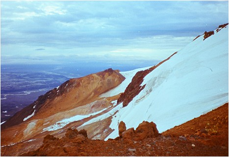
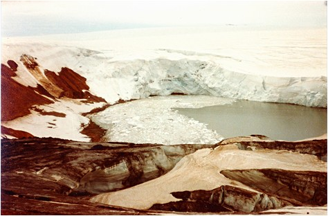
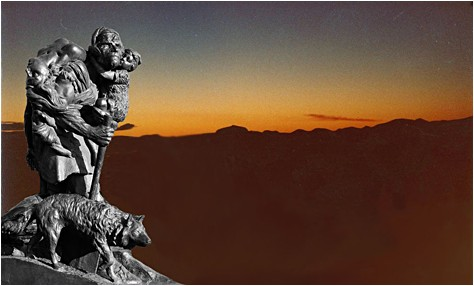

<< retur FJELD
EYVIND - Hvannalindir og Kverkfjöll
Jeg
vågner ved solopgang på mit østvendte hotelværelse
i Egilsstadir på Østisland. Hotellet ligger lige ned mod
Lagarfljót ved den opdæmmede sø Lögurinn.
Vejret er perfekt, og jeg glæder mig til dagens tur mod Myvatn-området, hvor jeg om nogle dage skal møde min kone og vores fælles venner fra Danmark. De lander i Akureyri, og vi har aftalt at mødes ved Godafoss kl. 9 om morgenen , så jeg har tid til at nyde køreturen mod Myvatn og lave lidt research, inden de dukker op. Sammen skal vi så udforske områdets fantastiske natur.
Det har været en oplevelse at møde Østlandets grønne,
bløde kurver og de dybt indskårne fjorde med idyllisk beliggende
byer i bunden af fjordene. Djúpivogur var f.eks. en særdeles
charmerende by med et godt kaffested nede ved havnen, hvor jeg for et
år siden sad sammen med min kone og vores gode venner og nød
en kop kaffe til vafler med syltetøj. Fra den udendørs
café kunne vi følge livet på havnen og se fjeldene
bag ved med de smuldrende lavalag, som alle hælder svagt mod øst
- ind mod den nyvulkanske zone på midten af Island, som jeg nu
er på vej imod.
Island er virkelig et land med store kontraster, et land, der er skabt
i mødet mellem ild og is. Island revner på midten i den
nyvulkanske zone, så det er der, de aktive vulkaner og spaltezoner
ligger.
Når Europa og Nordamerika glider fra hinanden med et par centimeter om året, må Island åbne sig på midten for at bane vej for de glødende lavamasser, der presser på fra neden.
Jeg glæder mig til igen at komme ind i de mørke aske- og lavalandskaber, hvor der er frit udsyn til alle sider over de øde landskaber med en kæmpe himmel ovenover.
Jeg følger hovedvej 1 op mellem Bótarheidi / Lagheidi
og krydser floden Jökulsá á Dall, hvor vejen drejer
90 grader mod sydvest, og følger så floden de næste
30 km. Her drejer vejen mod nordvest over Jökuldalsheidi, for siden
at dreje mere vest på igennem Langidalur, til vejen igen drejer
mod nordvest med Dimmifjállgardur på højre hånd.
Navnet lyder lovende, fordi det betyder noget i retning af ”mørke
fjeldes have”. Kursen er lagt mod sprækkezonerne ret forude
lige på den anden side af den store smeltevandsflod Jökulsá
á Fjöllum, som transporterer enorme mængder af café
au lait farvet smeltevand fra Vatnajökulls nordlige flanke.
Lige inden floden er der en afkørsel mod nord til Dettifoss,
men da jeg skal se på dette mægtige vandfald sammen med
min kone og mine venner, krydser jeg floden og ser snart Islands største,
øde lavamark foran mig på venstre hånd. Det er den
frygtindgydende Odadahraun ( de onde gerningers lavamark) - et kæmpe
område på over 3000 km2 øst og sydøst for
Myvatn. Kort tid efter jeg har krydset jøkelfloden, ser jeg rute
F 88, som går fra på venstre hånd, og der står
Askja på skiltet. Jeg kører lidt ind ad vejen, men indser
hurtigt, at en personbil på denne vej ikke er nogen god ide, da
den absolut er beregnet til en firehjulstrækker. Så jeg
holder ind til siden, åbner bildøren, slukker motoren og
læner mig tilbage og nyder udsigten over lavamarken til askevulkanen
Hrossaborg.
Mine tanker glider 30 år tilbage i tiden, og jeg bliver overvældet
af minder fra en tur videre ad denne magiske vej - ind i Islands største
ødemarker:
Årstallet er sommeren 1978. Jeg har meldt mig til en vandretur med en gruppe fra Ferdafelags Islands, der skal ind og kigge på vulkanen Askja og derfra videre mod Vatnajökull for at bestige vulkanen Kverfjöll, som ligger under Vatnajökulls ismasser. Vi har besluttet at bestige den vestlige kraterkant, hvor der ligger en lille hytte, som er ejet af Islands Glaciologiske Selskab. Vi er en gruppe på femten mennesker, som alle er vant til at vandre, men turen bliver alligevel hårdere, end de fleste havde forestillet sig.
Jeg sidder forrest i den højakslede bus, som kan skræve
over de sorte askedynger på vejen og lavabulerne. Foran mig dukker
vulkanen Herdubreid op, som rager 1000 meter op over Odadahraun. Den
har silhuet som en stor hat med stejle sider og en kappe af lava på
toppen, som viser, at vulkanen er dannet under et tykt isdække
i sidste istid. På et tidspunkt smeltede den rødgødende
lava igennem isen, og da det størknede, virkede det som et beskyttende
topdække over den glasagtige masse, som mødet mellem ild
og is havde skabt. Herdubreid er bare én af mange af den slags
vulkaner, som også kaldes Mobergvulkaner eller Stapi - kært
barn har mange navne - og Herdubreid er den mest berømte af dem
alle og så svær at bestige, at den første mand på
toppen var en tysk vulkanolog, ved navn H. Reck, som besteg vulkanen
i 1908 sammen med islændingen Sigurdur Sumarlidason.
Vi kører skrumplende videre og når oasen Herdubreidalindir
og krydser her to floder, Grafarlandaá og Lindá, som begge
har krystalklart kildevand i modsætning til jøkelflodens
grumsede vande. De to kildefloder udspringer i kanten af den ca. 4000
år gamle lavaoverflade, som stammer fra skjoldvulka-nen Flatadyngja.
Herdubreidalindir er en grøn oase i alt det sorte øde,
og her er saftigt grønt græs og store kvanplanter, som
vokser omkring kildefloderne og dufter saligt og krydret grønt.
Her ligger en turisthytte, hvor man kan overnatte, en vild luksus i
forhold til den ødemark, vi lige er kørt igennem. Vi holder
dog bare en kortere frokostpause, drikker lidt koldt vand fra kildefloderne
og spiser en flig af den medbragte tørfisk samt et stykke hangikjött
og ser på resterne af en meget simpel hytte, som har været
benyttet af en fredløs ved navn Fjalla Eyvindur (Fjeld Eyvind),
som sandsynligvis overvintrede her i vinteren 1772-73. Hytten var bygget
op af lavablokke og tørv, og som bærende tagkonstruktion
havde Fjeld Eyvind brugt rygsøjlen med ribben fra en hest, han
havde ædt. Hele vinteren havde han overlevet ved at spise råt
hestekød.
Vi bryder op efter en kortere pause og kører videre mod syd.
En halv times kørsel syd for Herdubreida-lindir dukker der en
mandsskikkelse op i lavamarkerne mod øst. Han vinker mod bussen,
og vi standser og venter. Det er ret usædvanligt at møde
en blaffer i dette øde område. Da skikkelsen kommer nærmere,
kan vi se, at det er en mand med et kæmpe vildtvoksende skæg
og et stort, lyst hår. Han kommer gående på bare tæer
gennem den sorte lava og aske og smiler glad til os, da han når
frem til bussen. Han fortæller os, at han har gået fra Eigilstadir
tværs over højlandet - en tur på mere end 100 km
i det totalt vildsomme terræn.
Det besynderlige ved det hele er, at manden er dansker, og at han ”bare” har været en lille tur i Egilstadir for at besøge sin islandske kæreste. Hans udgangspunkt er Hvannalindir, en oase lidt længere mod syd lige nord for Vatnajökull. Her overnatter han i Fjeld Eyvinds gamle hytte, og han vil nu gerne hjem igen efter sin lille udflugt.
Vi skal jo først til vulkanen Askja og kigge lidt på dette kæmpe vulkankompleks, men derefter går turen via Hvannalindir ned mod Kverkfjöll, hvor vi skal overnatte i hytten Sigurdarskáli for foden af Kverkjökull. Det er vigtigt, at vi er veludhvilede inden opstigningen på Vatnajökull den følgende dag.
Vi kører med vores vildmand et smut over Vikursandur med de gule pimpstenslag fra Vitikraterets dannelse i 1875 og snor os videre gennem sorte lavamarker fra Askjas udbrud i 1961, ind gennem en åbning i kratervæggen ved Öskjuop-passet og tilbringer nogle timer med at vandre rundt og se på kratersøerne Ôskuvatn og helvedeskrateret Viti med de flotte farver. Det var kratersøen Öskuvatn, der i 1907 slugte to tyske geologer, der var ude at sejle på søen. Man har aldrig siden fundet spor af dem eller deres båd.
Efter
nogle timer skal vi videre tilbage ad samme vej og ramme rute F910 mod
syd over jøkelfloden via en nybygget bro, som har muliggjort,
at man kan køre helt ned til Hvannalindir, hvor vores vildmand
skal sættes af. Hvannalindir er, som navnet siger, en oase med
vildtvoksende kvan, beliggende ved en Lindáflod- en kildeflod.
Da vi når oasen ved aftenstid, fortæller vores vildmand
os om Fjeld Eyvind, og han viser os ruinerne af en gammel hytte, som
var bygget for foden af lavastrømmen Lindahraun. Den blev opført
over en kilde, der risler igennem oasen. Vi kan se, at hytten har haft
flere rum og kan forstå, at Fjeld Eyvind havde indrettet sig med
soverum, stue og køkken, samt toilet med skyl.
Fjeld Eyvind skulle efter sigende have levet her i 1770 erne, hvor det
var bidende koldt på den nordlige halvkugle. Han var dømt
fredløs i 20 år på grund af overfald og ran af heste
og får, så for at undgå at blive fanget, var han søgt
ud i ødemarken, hvor han havde bygget sine overlevelses-hytter.
I Hvannalindir er græsset højt og saftiggrønt, og
kvanerne står store og flotte og lokker med deres syrlige duft.
Efter sigende skal man også kunne koge suppe på rødderne,
som er meget næringsrige.
Det har virkelig krævet sin mand at overleve her isvintrene i
1700-tallet. Fjeld Eyvind havde en kone, der hed Halla, som han af og
til besøgte på Øst -og Sydlandet, - og jeg tør
næsten ikke spørge vores vildmand om navnet på hans
kæreste i Eigilsstadir. Jeg lægger mærke til, at hans
fødder og hænder er meget store og synes også, at
det svarer meget godt til de beskrivelser, jeg har læst om Fjeld
Eyvind. Vi spiser lidt rastemad sammen med ”Fjeld Eyvind”,
som pakker sin vadsæk ud og dækker op med hangikjött
og fladbrød. Han henter også et røget fårehoved
(svid) op af sin vadsæk og gnaver sultent af det.
 Vi
siger farvel til Fjeld Eyvind og kører videre mod Sigurdarskáli,
hvor vi ankommer sent om aftenen. Efter en god nats søvn bereder
vi os på en strabadserende vandretur, der først går
langs gletscheren Kverkjökull og så videre op over selve
gletscheren op gennem en dal med et utal af varme kilder og dunstende
svovldampe. Da vi er i nærheden af vores mål, begynder det
at sne og blæse op, så vi aser os videre opad og fremad
med dårligere og dårligere sigtbarhed. Vi når dog
hytten Kverkfjallaskáli på randen af en stor kratersø,
hvor Vatnajökull kælver isbjerge ned i varmt vand.

I
det øjeblik, vi når hytten i godt 1700-meters højde,
bryder snestormen løs. Den spærrer os inde i de næste
24 timer. Der er trangt med plads i den lille hytte, idet der kun er
6 køjer, og vi er 15 udmattede vandrere, der må skiftes
til at sove. Når vi skal ud at tisse i det fri, foregår
det i læsiden af hytten, og man skal ikke fjerne sig meget mere
end 1 meter, for ikke at blive blæst væk og miste livslinen
tilbage. Af og til lyder drønene fra iskappen, når den
kælver i det lune vand. Man mærker jorden ryste under sine
fødder og skynder sig ind i hyttens lune tryghed.
Tiden i hytten bliver tilbragt med at udveksle erfaringer med den islandske
natur og oplevelser fra tidli-gere ture i fjeldene. Jeg lytter andægtigt,
for her på Island er naturen besjælet med både ånder
og huldrer, og jeg har aldrig set en fjeldvandrer forurene med naturfjendligt
materiale.
Snestormen ophører lige så pludseligt, som den er kommet.
Vi beslutter os for at vende tilbage i stedet for at fortsætte
til Skarphedinstindurs top, som ligger i en højde af 1936 m.o.h.
og påbegynder nedstig-ningen i fuldstændig klart og stille
vejr. Solen står lavt på himlen i vest, og vulkanryggene
kaster lange, skarpe skygger. Vi passerer igen dalen med de varme kilder,
hvor farverne eksploderer i varme brune og røde nuancer. Solen
går ned, og himlen farves rødlilla.

Silhuetten
fra Aska og særligt Herdubreid i nord står skarpt. Jeg følges
under hele turen med en islænding, der tænder på farver
og former, lige som jeg selv gør, og vi bliver grebet af ”ødemarkseufori”
og skyder en genvej ned over en stærkt hældende snefane,
siddende på hver sin plastikpose. Da vi nærmer os hytten
Sigurdarskáli står fuldmånen op over højderyggen
i øst og ligner en stor snebold, som er ved at rulle ned ad fjeldet.
Vi vandrer i andagtsfuld stilhed de sidste kilometre mod hytten over
en lille sandet slette.
Langsomt
vender jeg tilbage til nuet. Så vidt jeg ved, har vi nu året
2007, og jeg er på vej mod Myvatn-området, den største
oase på Island. Heldigvis kan man også rejse tilbage i tiden
på en måde, som gør fortiden levende i ens bevidsthed
her og nu.
Jeg får vendt bilen i det sorte lava-sand og kører langsomt mod de kogende mudderpøle for foden af Namafjall ( http://www.oplevisland.dk/namafjall.html ) © Copyright Morten Stender << retur | |